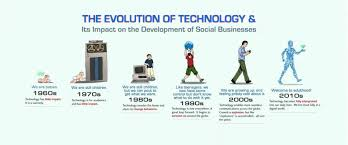

History
Since its inception, TechCon has grown from a small gathering of tech enthusiasts into one of the most anticipated
technology conferences worldwide. The idea for TechCon began in 2010, when a group of visionaries, driven by their
passion for technology and innovation, recognized the need for a platform that would bring together experts from
various tech fields to share ideas, showcase new developments, and shape the future of the industry.
Early Beginnings (2010–2013)
TechCon's first event was held in a modest venue, with fewer than 100 participants. It was created to provide a
collaborative environment where developers, engineers, and technologists could discuss emerging technologies
like cloud computing and mobile app development, which were in their infancy at the time. Despite its
humble beginnings, the first TechCon sparked intense interest, thanks to its hands-on workshops, product
demonstrations, and inspiring talks by early tech pioneers.

Mission
At TechCon, our mission is to foster innovation, collaboration, and knowledge-sharing within the global tech community.
We aim to bring together industry leaders, emerging startups, and tech enthusiasts to explore groundbreaking advancements
and trends shaping the future. Through dynamic discussions, hands-on workshops, and networking opportunities, TechCon seeks
to empower individuals and organizations to drive meaningful change, solve real-world problems, and unlock the full potential
of technology for a better tomorrow.
.jpg)
Past Speakers
.jpg)
Alfred Bale
he will talk about the History
.jpg)
Wilfred Zaha
he will talk about the effects
Locus Tomas
he will talk about the future of it